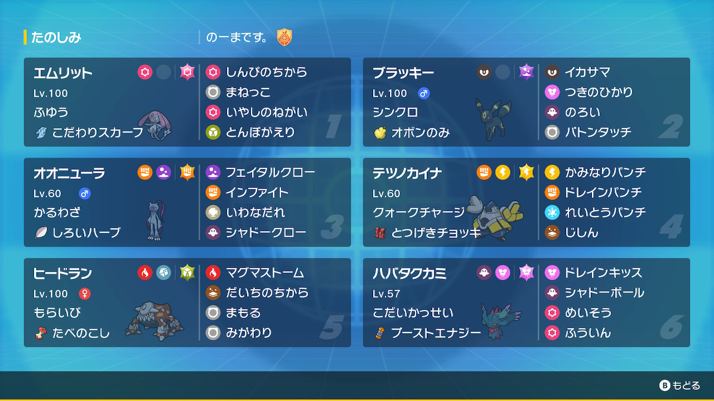

動画
パーティ画像

努力値
エムリット @ こだわりスカーフ
ふゆう / おくびょう
155-x-126(4)-157(252)-125-145(252)
ブラッキー @ オボンのみ
シンクロ / ずぶとい
202(252)-x-178(252)-x-151(4)-85
オオニューラ @ しろいハーブ
かるわざ / ようき
181(204)-182(252)-81(4)-54-101(4)-160(44)
テツノカイナ @ とつげきチョッキ
クォークチャージ / いじっぱり
239(76)-198(156)-157(228)-x-93(36)-72(12)
ヒードラン @ たべのこし
もらいび / おだやか
193(212)-x-136(76)-158(60)-160(156)-98(4)
ハバタクカミ @ ブーストエナジー
こだいかっせい / おくびょう
162(252)-x-107(252)-156(4)-155-170
ふゆう / おくびょう
155-x-126(4)-157(252)-125-145(252)
ブラッキー @ オボンのみ
シンクロ / ずぶとい
202(252)-x-178(252)-x-151(4)-85
オオニューラ @ しろいハーブ
かるわざ / ようき
181(204)-182(252)-81(4)-54-101(4)-160(44)
テツノカイナ @ とつげきチョッキ
クォークチャージ / いじっぱり
239(76)-198(156)-157(228)-x-93(36)-72(12)
ヒードラン @ たべのこし
もらいび / おだやか
193(212)-x-136(76)-158(60)-160(156)-98(4)
ハバタクカミ @ ブーストエナジー
こだいかっせい / おくびょう
162(252)-x-107(252)-156(4)-155-170